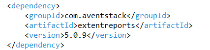
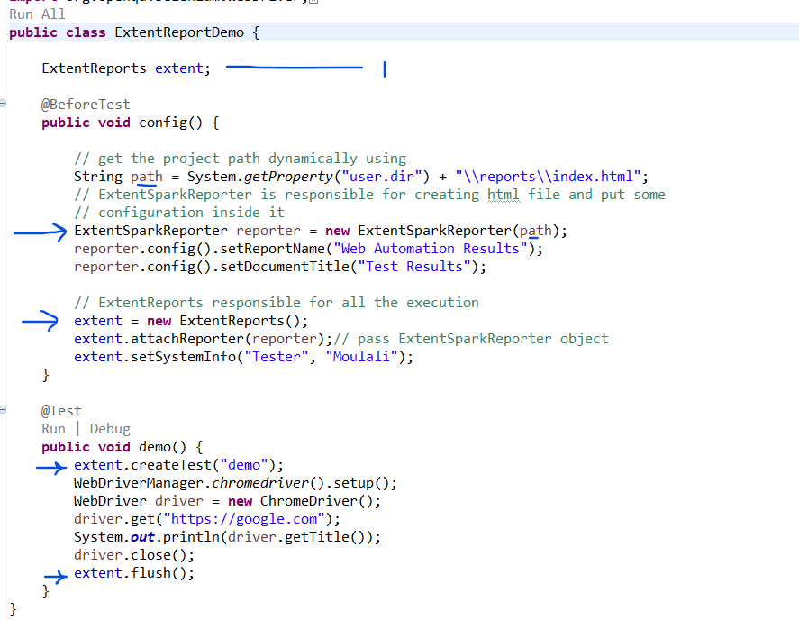

Add the extent report dependency into pom.xml
When ever dealing with extentreports 2 classes must be remembered : ExtentReports , ExtentSparkReporter
Look in the below image and read comments , we have created object for both classes
We defined a path variable for reports ,passed it to ExtentSparkReporter , using ExtentSparkReporter object we have set the document title and name
To ExtentReports we attached the reporter
